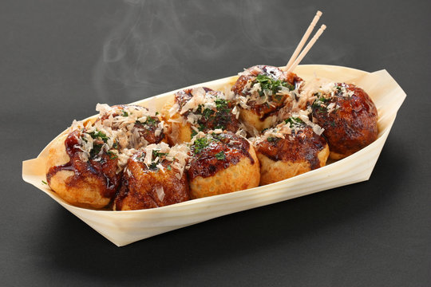

Takoyaki Recipe
Home

Description
Takoyaki literally translated means octopus fried and its one of Osaka's quintessential street food
Ingredients
- Eggs
- Flour
- Dashi Powder
- Soy Sauce
- Octopus/Tako
- Green Onions
- Tenkasu
- Takoyaki Sauce
- Kewpie mayo
- Bonito flakes
- Seaweed
- Takoyaki pan
Step
- Mix the batter up with a whisk making sure there are not floury bits.
- Prep all of the fillings. Cut up the octopus, slice the green onions and make sure
you have everything at the ready: a little dish of oil, allyour ingredients, some skewers to flip the balls.
and a plate to serve on. Heat up the pan.
- Generously oil the pan with a brush or a paper towel dipped in oil.
Give the batter a whisk then pour into the individual compartments all the way up to
the top. It's okay if they overflow a bit. Add in the filings and let cook until the edges start to
look more solid and opaque
- Use your skewers to turn the takoyaki 90 degrees. If they dont' easily move,
They need more time to crisp up. Once the're at a 90 degree angle, pour in a bit more
better to ensure a super round ball. Let cook, stuffing in any excess batter that's outside the ball, then turn again.
You should have a round ball. Cook until the balls are crispy and brown, moving the balls around from mold to mold to evenly cook
(this is because most pans will have uneven heating). As the balls crisp up, it will be easier to flip them
- When the balls are golden and crisp, pop them on a plate and brush with takoyaki sauce and squeeze
on some mayo. Top Finish with a sprinkle of bonito and aonori. Enjoy!